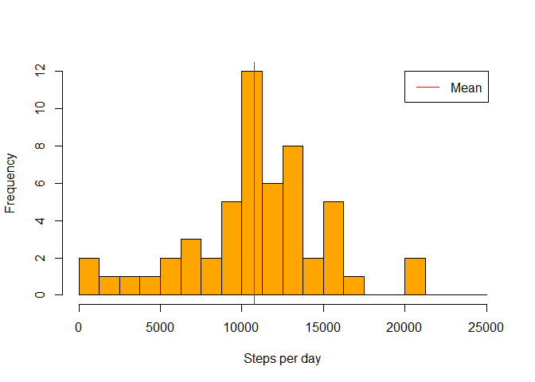

REPRODUCIBLE RESEARCH: Assignment 1
LOADING THE DATA
I downloaded the data and loaded them using R Studio. After that I checked the data format and summarized them.
activity <- read.csv("~/R/Repreducible research/repdata-data-activity/activity.csv")
head(activity)## steps date interval
## 1 NA 2012-10-01 0
## 2 NA 2012-10-01 5
## 3 NA 2012-10-01 10
## 4 NA 2012-10-01 15
## 5 NA 2012-10-01 20
## 6 NA 2012-10-01 25summary(activity)## steps date interval
## Min. : 0.0 2012-10-01: 288 Min. : 0
## 1st Qu.: 0.0 2012-10-02: 288 1st Qu.: 589
## Median : 0.0 2012-10-03: 288 Median :1178
## Mean : 37.4 2012-10-04: 288 Mean :1178
## 3rd Qu.: 12.0 2012-10-05: 288 3rd Qu.:1766
## Max. :806.0 2012-10-06: 288 Max. :2355
## NA's :2304 (Other) :15840MEAN AND MEDIAN TOTAL NUMBER OF STEPS TAKEN PER DAY
Firstly, I created new dataset that contains only complete observations from original one. Then I computed total number steps of each day using tapply() function. Finally, I computed mean and median total number of steps per day and plotted the histogram.
dat1<-activity[complete.cases(activity),]
step.sum<-tapply(dat1$step,dat1$date,sum)## Warning: Name partially matched in data framemean(step.sum,na.rm=TRUE)## [1] 10766median(step.sum,na.rm=TRUE)## [1] 10765hist(step.sum,seq(0,25000,1250),col="orange",xlab="Steps per day",main="")
The mean is 1.0766 × 104 and median is 10765
AVERAGE DAILY ACTIVITY PATTERN
I used the modified dataset from previous question. The function tapply() was used to compute average steps for each interval. Subsequently, I created time series plot showing average steps by time interval.
int.mean<-tapply(dat1$step,as.factor(dat1$interval),mean)## Warning: Name partially matched in data framelibrary(nnet)## Warning: package 'nnet' was built under R version 3.1.1int.mean[which.is.max(int.mean)]## 835
## 206.2plot(int.mean,type="l",ylab="Mean steps ",main="",xlab="Interval")
The highest average steps are 206.1698 in interval 835.
MISSING VALUES
I decided to replace missing values by average steps of interval. As a first step, I calculated average steps for each interval. Then I converted the output to dataframe and merged it with original dataframe, matching the intervals.. After that, I easilly replaced NA with matched interval average. In the end, I computed mean, median and plotted the histogram.
dat2<-activity
my.mean<-function(x) mean(x,na.rm=TRUE)
int.mean2<-tapply(activity$step,as.factor(activity$interval),my.mean)## Warning: Name partially matched in data framedf.int.mean2<-data.frame(interval=names(int.mean2),mean=as.vector(int.mean2))
dat2<-merge(dat2,df.int.mean2,by="interval")
dat2$steps[is.na(dat2$steps)]<-dat2$mean[is.na(dat2$steps)]
step.sum3<-tapply(dat2$step,dat2$date,sum)## Warning: Name partially matched in data framemean(step.sum3,na.rm=TRUE)## [1] 10766median(step.sum3,na.rm=TRUE)## [1] 10766hist(step.sum3,seq(0,25000,1250),col="orange",xlab="Steps per day",main="")
In the original dataframe, there is 2304 NAs. After replacing NA with interval averages I computed that mean total number of steps is 1.0766 × 104 and median total number of steps is 1.0766 × 104.
DIFFERENCES IN ACTIVITY PATTERNS BETWEEN WEEKDAYS AND WEEKENDS
I used strptime() function to identify days. After that, I splitted the dataset to weekend and weekday datasets. Finally, interval means were computed and graph plotted for each dataset.
Rdate2<-strptime(as.character(dat2$date),"%Y-%m-%d")
dat3<-cbind(dat2,wd=as.factor(Rdate2$wday))
levels(dat3$wd)<-c("weekend","weekday","weekday","weekday","weekday","weekday","weekend")
dat.weekend<-dat3[dat3$wd=="weekend",]
dat.weekday<-dat3[dat3$wd=="weekday",]
int.mean.weekend<-tapply(dat.weekend$step,as.factor(dat.weekend$interval),mean)## Warning: Name partially matched in data frameint.mean.weekday<-tapply(dat.weekday$step,as.factor(dat.weekday$interval),mean)## Warning: Name partially matched in data frameplot(int.mean.weekend,type="l",ylab="Mean steps ",main="Weekends",xlab="Interval")
plot(int.mean.weekday,type="l",ylab="Mean steps ",main="Weekdays",xlab="Interval")